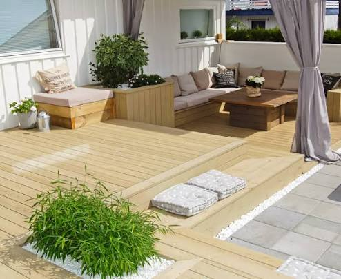

Terrasse
En terrasse gir deg et ekstra uterom hvor du kan slappe av, grille og nyte fine sommerdager. Den kan gjøre boligen mer innbydende og gi deg mer plass til å være sammen med familie og venner. En terrasse er også en investering som kan øke både trivselen og verdien på boligen din.
4 enkle tips om du ønsker terrasse
- Planlegg godt før du begynner
- Tenk på beliggenheten
- Tenk på været når du velger materialer
- Lag et godt fundament